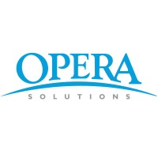

About
I'm Aaron Zhang. I build AI products for the people who run the platform's campaigns and the creators who go live on it. That's TikTok LIVE, in Sydney.
I've built campaign products for ten years, across telecom, finance, e‑commerce and now live streaming. The industry kept changing; the product didn't. Decide who you're trying to move, reach them, then find out whether the number moved because of you.
Half the work is efficiency, taking hours out of a process. The half I care about is effect, and effect is where the arguments start. That's what I write about.
Where I've worked
-
2024 → now
 AI products for campaigns and creators
AI products for campaigns and creatorsThree agents in production: one takes work off campaign operators and turns the post-campaign review into the next campaign's plan, one works directly on reach, one coaches creators while they are live. The last lifted participation and revenue under a controlled A/B test.
-
2021 → 2024
Campaign and creative platforms
I built the campaign platform 0→1: 10 systems into one, 10% off the hours, 10% on sales. Then a creative platform, 10,000 AI images a month, patent on the rendering.
-
2021
 Campaign algorithms, financial services
Campaign algorithms, financial servicesI split the hand-written rules from the models on the card-acquisition platform, cutting deployment time 50% and lifting conversion 10%.
-
2019 → 2021
Call-centre campaign AI
Intent and eligibility scoring for 200 agents: the right 30% of customers covered 80% of revenue, loan sales up 10%. The app bot doubled what that channel sold.
-
2017 → 2019

Campaign models for a US telecom carrierWhere I learned to build models: XGBoost, Lasso, and resampling to keep test and control comparable. Reports went from 3 hours to 45 minutes.
-
2013 → 2017
Automation
A second degree in finance alongside it.
On my own time
-
DailyWork
Open-source agent skills I run in a real work week: eval gates, blind A/B verification, metric attribution, cross-model review. Built for Claude Code and Codex CLI.
-
Trend Intelligence Engine
A daily digest that reads about seventy sources and hands back the few things worth acting on. I knew nothing about intelligence mining; I owned the question and the standard for checking answers.
-
No Magic, Only Method
A talk about how far you can let AI climb and what you still have to own at every rung. Published as a deck you can fork.
Next
Coach-style AI products: career coaching, study-abroad advising, adjacent things. Same shape as everything above, a person facing a real decision who needs an answer they can argue with. If you're building here, I'd like to compare notes.
Compare notes →